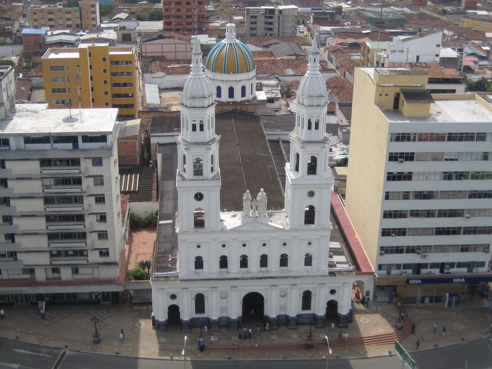
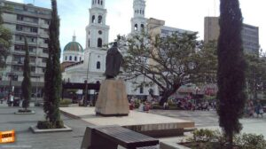
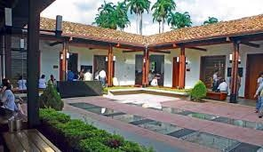
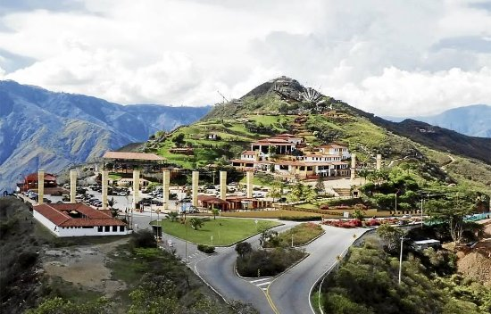
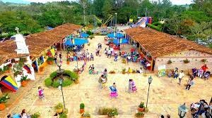

Catedral Metropolitana de la Sagrada Familia

Es uno de los templos religiosos más importantes de la ciudad, su imponente
infraestructura que incluye una cúpula amarilla y verde, ocupa un espacio total
de 72,20 m de largo y 32,50 de ancho. La catedral comprende tres cuerpos: un altar
mayor con una altura interior de 11,73 m, y dos altares laterales. Además, tiene 10
columnas en las naves laterales con acceso directo a la calle. El techo se realizó
a través de un acabado artesanal en estuco y metal.
Parque Santander

Es un lugar histórico, oficialmente se inaugura en 1925. Es un parque que
presenta una serie de caminos para poder dar un paseo, sentarse y también
admirar el entorno natural con el que se encuentran los visitantes.
Se construyó para homenajear al llamado Hombre de las Leyes Francisco
de Paula Santander y este lugar se le conoce como parque o Plaza Santander.
Además de la variedad de flora de este parque es interesante destacar alguna
que otra fuente, esculturas.
La Casa del Libro Total

Es un sitio en donde se conservan crónicas, anécdotas y relatos sobre la
historia de Bucaramanga. Se ubica en el centro de la ciudad y a pocos minutos
caminando de la Catedral de La Sagrada Familia, en una casa colonial que se
restauró para convertirse en un centro cultural y de tecnología. Es aquí, donde
además se creó la biblioteca digital gratuita “El libro total”, un repositorio
digital que cuenta con más de 60.000 títulos de diversas categorías como imágenes,
literatura y música. Una iniciativa que apoya la constante misión de La Casa del
Libro Total: recuperar el Patrimonio Cultural de la comunidad hispanohablante.
Parque Nacional del Chicamocha

Ubicado en la vía Bucaramanga - San Gil, a 54 km de la capital del departamento
de Santander, construido sobre el Cañón del Chicamocha, aprovechando sus riquezas
naturales e históricas. Es un parque temático, y es uno de los pocos parques naturales
de Colombia dedicados al ecoturismo, siendo por tanto uno de los sitios turísticos más
importantes del país. Fue abierto al público el 2 de diciembre de 2006. Tiene una
extensión de 256 hectáreas, y comprende un conjunto urbanístico conformado por
diferentes elementos y lugares que representan la cultura santandereana.
Ecoparque Cerro del Santísimo

Se ubica en la Vereda Helechales, Floridablanca, área metropolitana de Bucaramanga.
Es un sitio de peregrinaje, especialmente en Semana Santa. Se distingje por poseer
una escultura de Jesús de Nazaret de 35 m de alto incluido su pedestal de 6 m.
Cuenta con un sistema de teleférico de 1.380 m para acceder al parque en 5 minutos
desde la Hacienda La Esperanza (antigua casona ubicada en los alrededores del casco
urbano de Floridablanca, sede de la antigua Cervecería Clausen, la primera fábrica
cervecera del país). Fue inaugurada el 20 de junio de 2015.
La Mesa de los Santos

Ubicada en el municipio de Los Santos, al que se llega tras un viaje de 62 km al sur
desde Bucaramanga, se aprecia una buena vista del cañón del Chicamocha. Allí, en la
Mesa de los Santos, a 1.700 msnm, se cultiva café y se observan aves como el azulejo
palmero y la tángara real. También se encuentra el parador turístico Mi Colombia Querida,
que recrea la arquitectura de los Pueblos Guane.
Jardín Botánico Eloy Valenzuela

Es el único del Oriente colombiano, se encuentra en el municipio de Floridablanca.
Su nombre en honor al botánico, Juan Eloy Valenzuela y Mantilla. En este espacio,
que cuenta con 7,5 hectáreas, cuenta con aproximadamente 3.500 especies de plantas
nativas como orquídeas, heliconias, caracolíes, palmas, musgos y helechos, al igual
que ardillas, mariposas, patos e iguanas, entre otros animales.